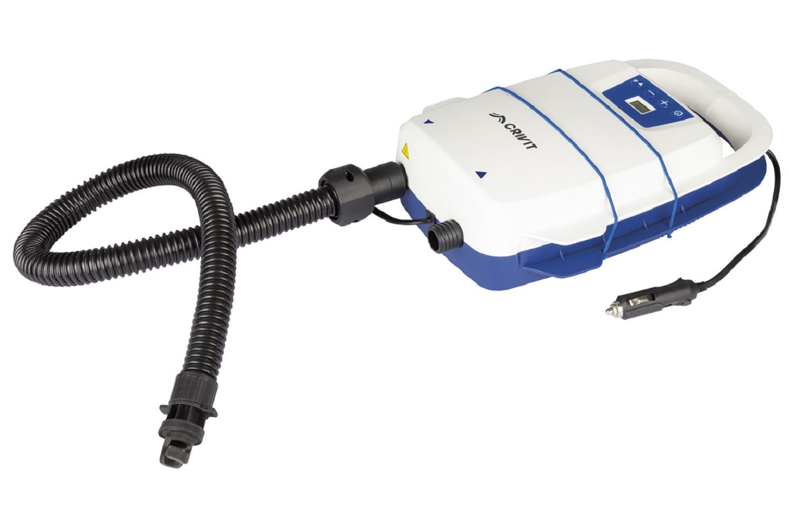
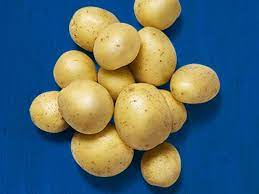

Lidl je německý řetězec diskontních prodejen, který působí ve 30 zemích Evropy a ve Spojených státech amerických.
Stejně jako Kaufland je Lidl součástí skupiny Schwarz-Gruppe, která je největší maloobchodní společností v Evropě.
V Lidlu lze také nálézt technologie na prodej. Jako třeba elektronická pumpa.
Brambory zde také můžeme nakoupit.
| Brambory | ||||
|---|---|---|---|---|
| Odrůda | Barva slupky | Ranost | Tvar hlízy | Varný typ |
| Bellarosa | červenoslupká | velmi raná | oválný | B |
| Agria | žlutoslupká | poloraná | dlouze oválný | B |
| Colette | žlutoslupká | velmi raná | dlouze ovalný | A |
| Monique | žlutoslupká | raná | ovalný | A |
| Allians | žlutoslupká | poloraná | dlouze oválný | A |
| Annalena | žlutoslupká | poloraná | dlouze oválný | A |
| Antonia | žlutoslupká | poloraná | oválný | A |
| Anuschka | žlutoslupká | velmi raná | oválný | A |
| Belana | žlutoslupká | raná | oválný | A |
| Bellinda | žlutoslupká | poloraná | dlouze oválný | A |
| Bernina | žlutoslupká | poloraná | dlouze oválný | A |
| Concordia | žlutoslupká | poloraná | oválný | B |
| Corinna | žlutoslupká | velmi raná | oválný | B |
| Elfe | žlutoslupká | raná | oválný | B |
| Euroflora | žlutoslupká | polopozdní | krátce oválný | škrob |
| Eurogrande | žlutoslupká | polopozdní | kulatý | škrob |
| Europrima | žlutoslupká | raná | kulatý | lupínky |
| Euroresa | žlutoslupká | polopozdní | krátce oválný | škrob |
| Eurostarch | žlutoslupká | polopozdní | krátce oválný | škrob |
| Finka | žlutoslupká | velmi raná | oválný | B |
| Georgina | žlutoslupká | poloraná | krátce oválný | B |
| Glorietta | žlutoslupká | velmi raná | dlouze oválný | A |
| Jelly | žlutoslupká | polopozdní | oválný | B |
| Julinka | žlutoslupká | raná | krátce oválný | B |
| Larissa | žlutoslupká | raná | oválný | B |
| Laura | červenoslupká | poloraná | dlouze oválný | B |
| Madeira | žlutoslupká | poloraná | oválný | B |
| Madison | žlutoslupká | raná | kulatý | lupínky |
| Malvína | žlutoslupká | raná | dlouze oválný | B |
| Marabel | žlutoslupká | raná | oválný | B |
| Mariola | žlutoslupká | poloraná | krátce oválný | B |
| Milva | žlutoslupká | poloraná | oválný | B |
| Montana | žlutoslupká | poloraná | oválný | A |
| Osira | žlutoslupká | velmi raná | krátce oválný | lupínky |
| Quarta | žlutoslupká | poloraná | oválný | B |
| Ramona | červenoslupká | poloraná | oválný | A |
| Red Fantasy | červenoslupká | poloraná | dlouze oválný | B |
| Red Sonia | červenoslupká | velmi raná | oválný | B |
| Sanibel | červenoslupká | velmi raná | oválný | B |
| Simonetta | žlutoslupká | poloraná | dlouze oválný | A |
| Sorentina | žlutoslupká | poloraná | krátce oválný | lupínky |
| Torenia | žlutoslupká | poloraná | dlouze oválný | A |
| Zuzanna | žlutoslupká | poloraná | kulatý | škrob |
Naučil jsem se vytvořit jednoduchou webovou stránku v HTML. Vidím to pozitivně.
Cítím se pozitivně.